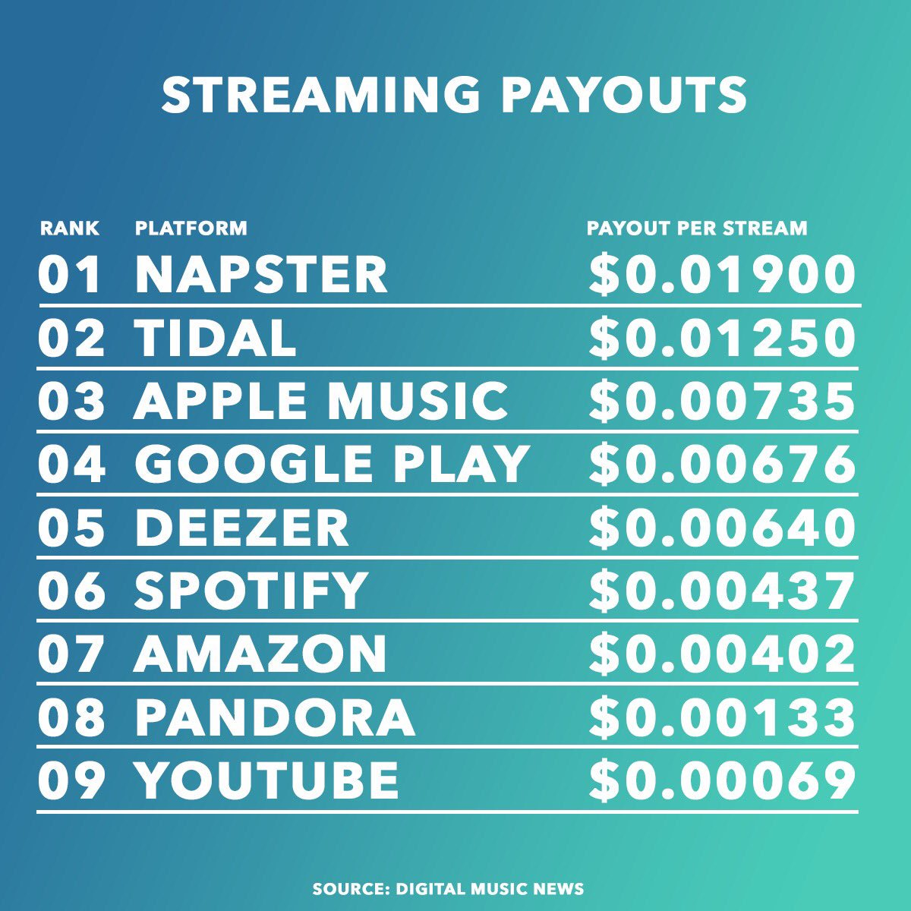

What is a stream?
A stream in the terms of the music industry is the action of playing a song on a streaming platform such as Spotify or YouTube. Streaming is the new way that artists share their music and content creators share their podcast. Its free to stream music on YouTube and on Spotify if you don’t mind paying for ads. Streams are an important discernment from an album sale. As defined by the RIAA for an artist’s song to go gold, the song has to be streamed 75 million times in order to qualify. For a song to go platinum, an artist would need that one song to be streamed 1.5 billion times. This outdated form of record counting is not fair for any artist in this new age of streaming. Artist signed to major labels need certifications to keep a good standing with the company they work for. With streaming being the number 1 outlet for music, it is making it harder for the top artists to stay above water. For more information about how gold and platinum certifications are given, please visit HERE for more details. For more information about a streams per company please refer to the table below. 